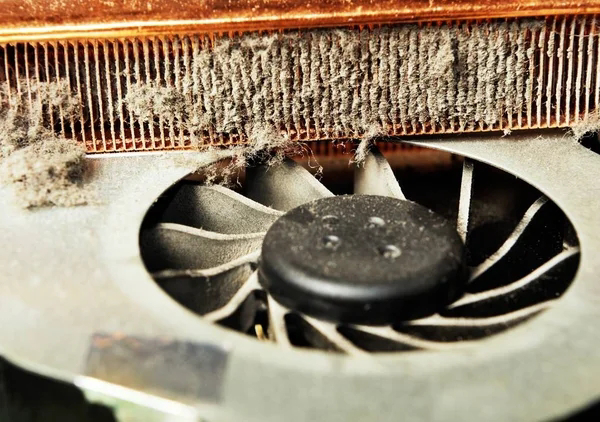
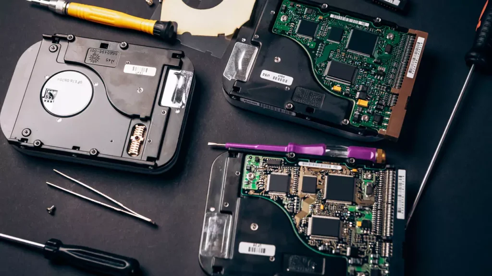
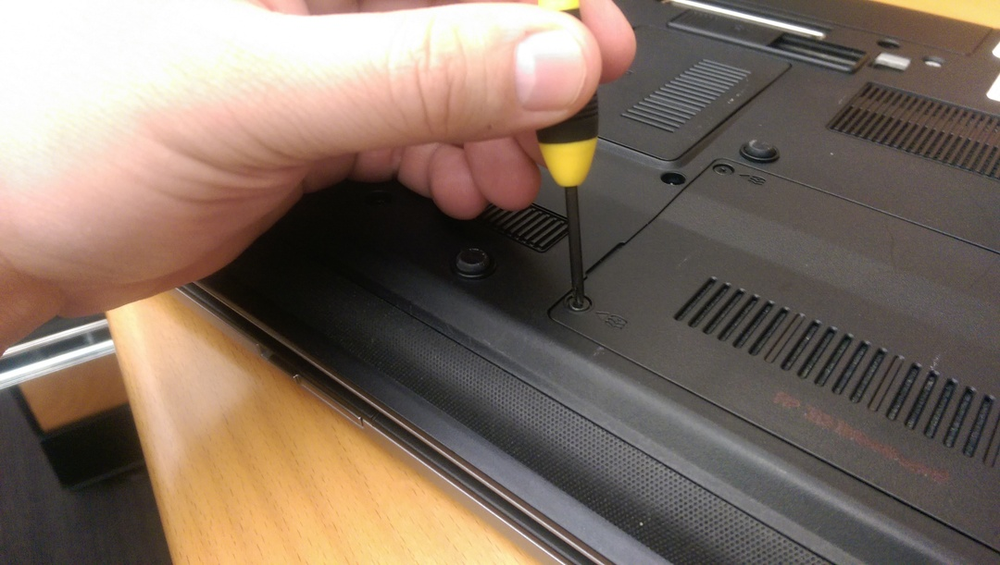
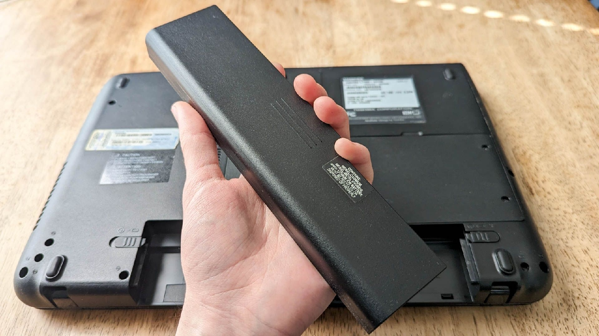
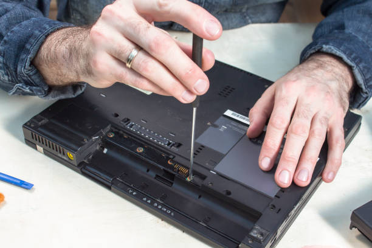
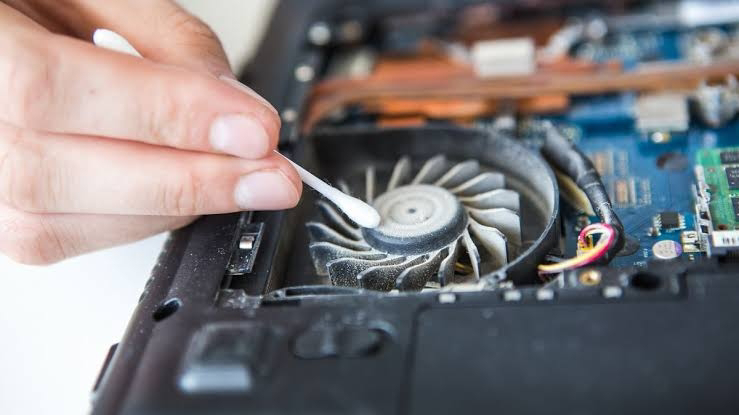
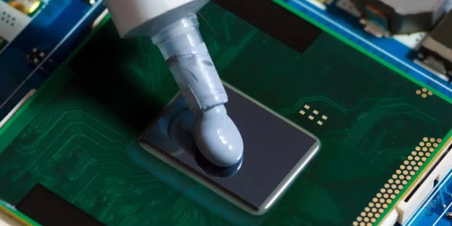
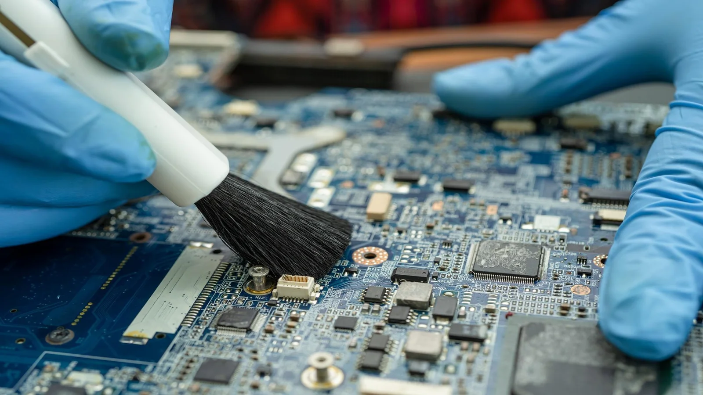

Panduan Lengkap: Cara Aman Membersihkan Komponen Internal Laptop Agar Tetap Dingin
Apakah laptop Anda mulai terdengar seperti mesin jet saat membuka beberapa tab browser? Atau mungkin area keyboard terasa panas hingga membuat tangan tidak nyaman? Jika ya, kemungkinan besar laptop Anda sedang "berteriak" minta dibersihkan. Debu adalah musuh dalam selimut bagi setiap perangkat elektronik, terutama laptop yang memiliki ruang sirkulasi udara sangat terbatas.
Banyak pengguna hanya fokus pada optimasi perangkat lunak (seperti yang telah kita bahas di artikel sebelumnya), namun mengabaikan kebersihan fisik. Padahal, penumpukan debu pada kipas dan heatsink dapat menyebabkan suhu prosesor meningkat drastis (overheat), yang berujung pada penurunan performa secara masal atau bahkan kerusakan permanen pada motherboard. Mari kita pelajari cara melakukan "servis mandiri" dengan aman dan benar.

Persiapan Alat: Apa yang Anda Butuhkan?


Sebelum membongkar laptop, pastikan Anda memiliki peralatan yang tepat. Menggunakan obeng yang salah atau kain yang kasar bisa berakibat fatal pada komponen kecil di dalamnya.
Alat Wajib:
- Obeng Presisi: Biasanya ukuran PH0 atau PH00 (tergantung model laptop).
- Compressed Air (Udara Bertekanan): Untuk meniup debu di sela-sela sempit.
- Kuas Halus/Anti-Statik: Untuk membersihkan debu yang menempel di motherboard.
- Alkohol Isopropil (Kadar 70-90%): Untuk membersihkan sisa pasta termal lama.
- Thermal Paste Berkualitas: Sebagai penghantar panas antara CPU dan Heatsink.
- Pinset: Untuk mengambil sekrup atau kabel fleksibel yang kecil.

Langkah 1: Protokol Keamanan
Listrik statis dari tubuh manusia dapat merusak komponen sensitif seperti chipset. Sebelum menyentuh bagian dalam, pastikan Anda telah melakukan langkah berikut:
- Matikan laptop sepenuhnya (bukan Sleep atau Hibernate).
- Cabut pengisi daya (charger).
- Lepaskan baterai jika model laptop Anda memiliki baterai eksternal. Jika baterainya tanam, langkah pertama setelah membuka casing adalah mencabut konektor baterai ke motherboard.
- Tekan dan tahan tombol Power selama 15 detik untuk membuang sisa energi listrik di kapasitor.

Langkah 2: Membuka Casing

Salah satu kesalahan pemula adalah mencampuradukkan sekrup. Laptop sering kali menggunakan ukuran sekrup yang berbeda untuk bagian depan dan belakang.
Gunakan wadah kecil atau magnet sheet untuk mengorganisir sekrup. Dokumentasikan posisi sekrup dengan kamera HP Anda sebelum dilepas. Setelah semua sekrup lepas, gunakan spudger atau kartu plastik bekas untuk mencongkel pinggiran casing dengan lembut. Jangan dipaksa jika terasa keras; periksa kembali apakah ada sekrup tersembunyi di bawah karet kaki laptop.
Langkah 3: Membersihkan Kipas & Heatsink
Kipas adalah bagian yang paling banyak mengumpulkan debu. Jika debu sudah mengeras dan membentuk lapisan seperti karpet (lint), udara dingin tidak akan bisa lewat.
Gunakan kuas halus untuk menyapu debu dari bilah kipas. Jika heatsink (sirip-sirip logam) bisa dilepas, cuci dengan air (pastikan kering total sebelum dipasang) atau tiup dengan udara bertekanan sampai sela-selanya bersih tembus pandang.

Langkah 4: Mengganti Pasta Termal
Pasta termal berfungsi mengisi rongga udara mikroskopis antara permukaan prosesor dan heatsink. Seiring waktu (biasanya 1-2 tahun), pasta ini akan mengeras dan kehilangan kemampuannya menghantarkan panas.
- Buka sekrup heatsink mengikuti urutan angka yang biasanya tertera di dekat sekrup (1, 2, 3, dst).
- Bersihkan sisa pasta kering pada CPU dan GPU menggunakan tisu atau kain mikrofiber yang dibasahi sedikit alkohol isopropil.
- Oleskan pasta termal baru seukuran biji kacang hijau di tengah chip. Jangan terlalu banyak, karena jika meluber bisa mengotori komponen di sekitarnya.
- Pasang kembali heatsink dan kencangkan sekrup sesuai urutan angka untuk memastikan tekanan yang merata.

Langkah 5: Pembersihan Motherboard

Jangan lupakan port USB, HDMI, dan lubang jack audio. Debu di dalam port bisa menyebabkan koneksi yang tidak stabil. Gunakan compressed air untuk meniup kotoran keluar. Untuk motherboard, cukup sapu perlahan dengan kuas anti-statik. Hidari menggunakan vacuum cleaner rumah tangga karena daya hisapnya terlalu kuat dan mengandung listrik statis tinggi.
Tabel Perawatan
| Kondisi Lingkungan | Pembersihan Debu Kipas | Penggantian Pasta Termal |
|---|---|---|
| Ruangan Ber-AC & Bersih | Setiap 12 Bulan | Setiap 2-3 Tahun |
| Ruangan Non-AC / Banyak Debu | Setiap 6 Bulan | Setiap 1-2 Tahun |
| Lingkungan Proyek / Outdoor | Setiap 3 Bulan | Setiap 1 Tahun |
Kesimpulan: Laptop Bersih, Performa Stabil
Membersihkan komponen internal laptop memang membutuhkan keberanian dan ketelitian. Namun, manfaatnya sangat sebanding dengan risikonya. Suhu yang terjaga berarti prosesor dapat bekerja pada kecepatan maksimalnya (tanpa throttling), komponen berumur lebih panjang, dan Anda terhindar dari biaya servis yang mahal di masa depan.